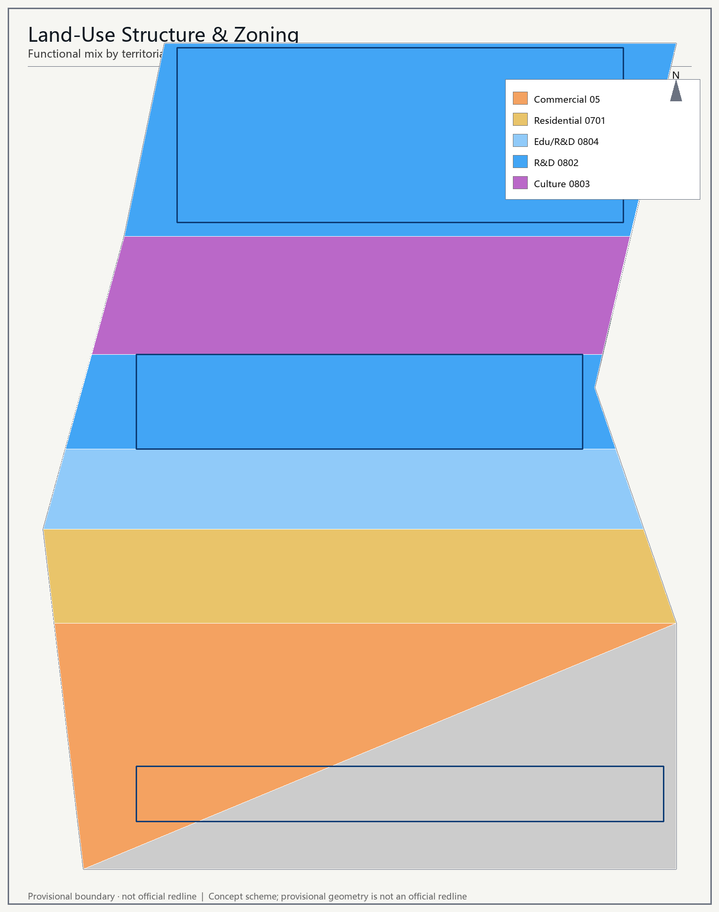
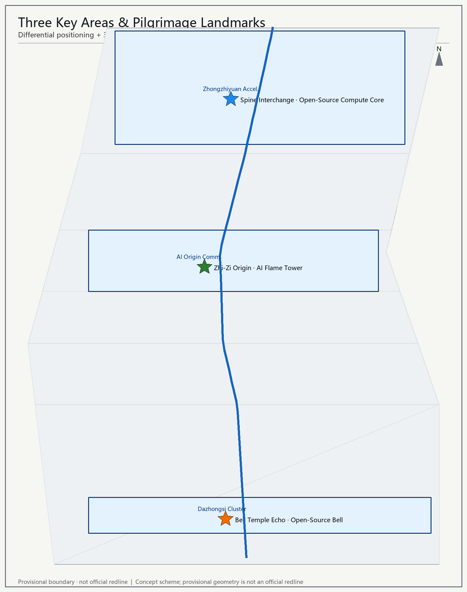
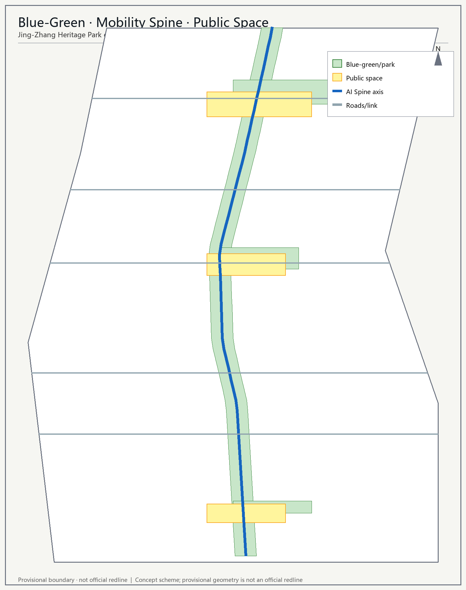
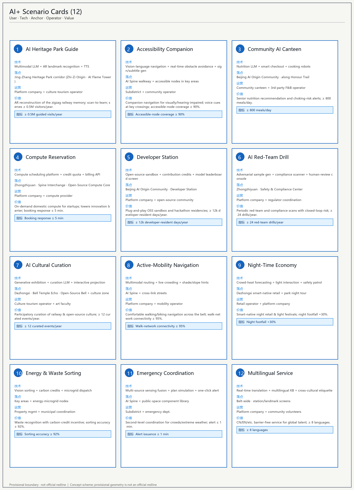
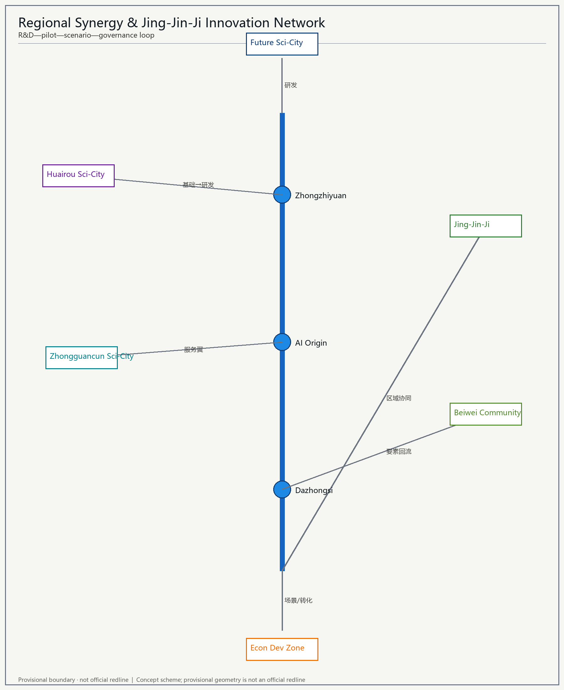
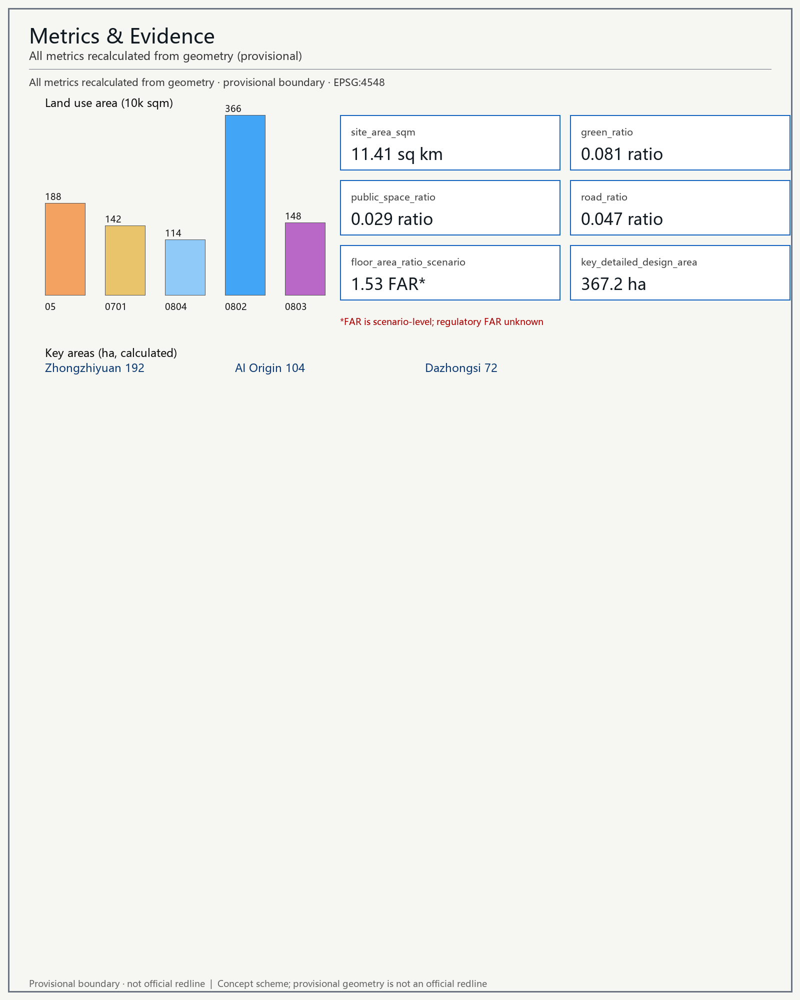

Core thesis
Under the motif "the century-old railway spine now carries the AI-era intelligence vein," the Jing-Zhang Heritage Park green corridor is shaped into a north–south AI Spine — at once a cultural green backbone and an urban vitality belt for the AI innovation ecosystem, scenario experience, and global talent flow. All spatial suggestions are concept proposals and reference schemes for professional teams to deepen.
Site overview

Land-use structure

Three key areas

Mobility & blue-green network

Twelve AI scenario cards

visual/assets/scenarios.json.Regional synergy & Jing-Jin-Ji network

Metrics & evidence

Design system at a glance
A north–south AI Spine linking Zhongguancun's innovation resources with the "1+X+1" industry system.
Open-source chips, frameworks, domestic large models and industry applications.
Heritage tours, accessible mobility, community canteens, compute booking, red-team drills, and more.
AI Flame Tower, Open-Source Compute Core, Open-Source Bell.
Disclaimer
All content is an open co-creation concept proposal generated from publicly cleared / provisional boundary data. It does not replace formal planning and does not constitute a government-approved conclusion. Official regulatory-control geometry (FAR, height, density, setback) is not included in the cleared dataset; all relevant figures are conceptual estimates.